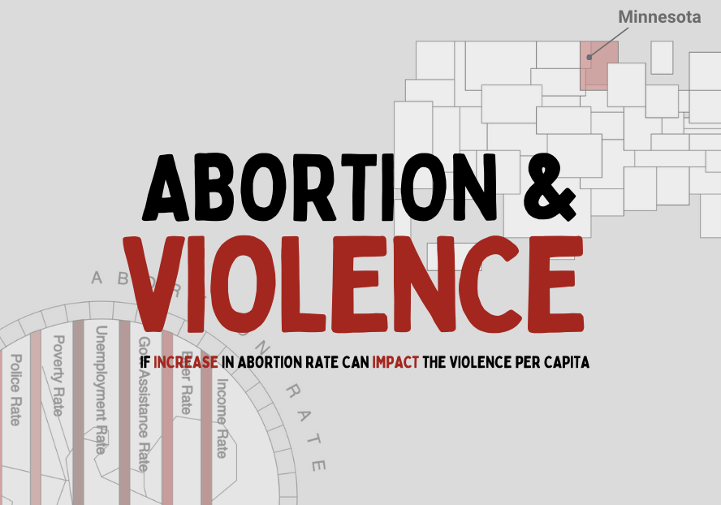
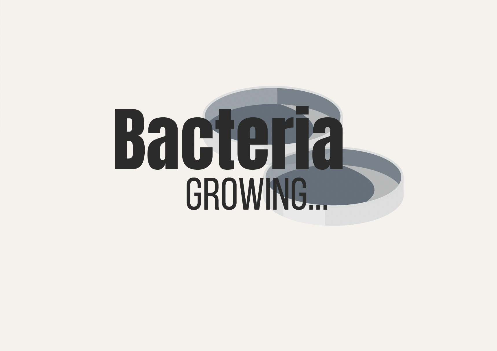
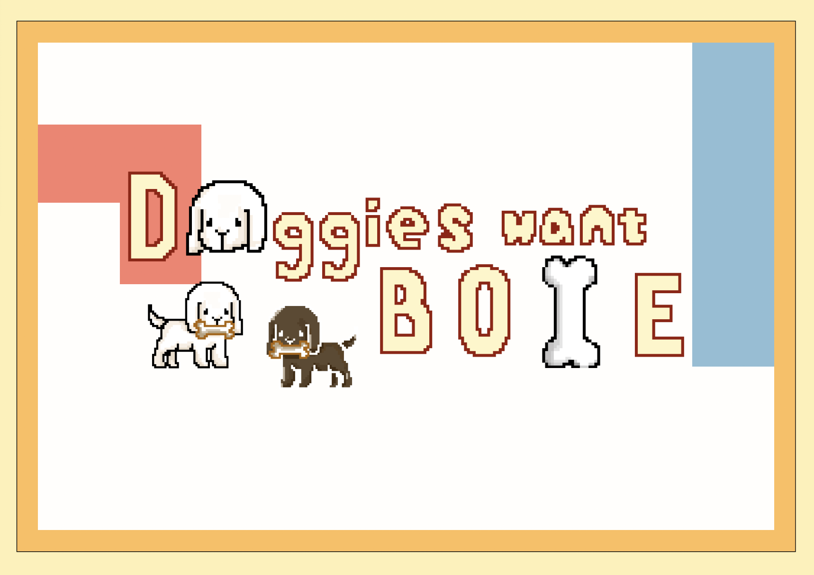
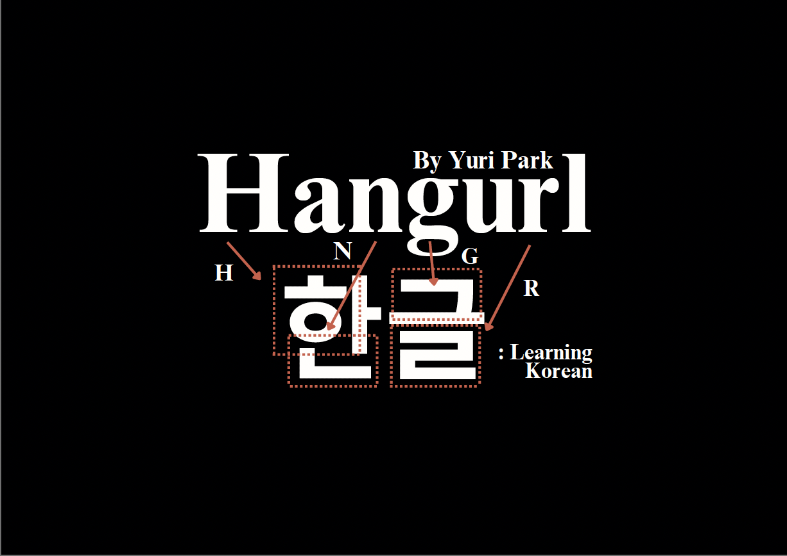

<!DOCTYPE html>
<html lang="en">
<head>
    <meta charset="UTF-8">
    <meta name="viewport" content="width=device-width, initial-scale=1.0">
    <title>Designer</title>

    <link rel = "stylesheet" href = "style.css">
</head>
<body>
    
</body>
</html>


<body>
    <header>
        <div>
            <div id="name-container">
                <div id="name-top">Designer</div>
              </div>
            <table id = "nonnav">
                <tr>
                    <th>
                        <a href="about.html">About</a>
                    </th>

                    <th>
                        <a href="contact.html">Contact</a>
                    </th>
                </tr>
            </table>
        </div>

        <br>
    
        <h1>Yuri Park</h1>
        <h3>Computation and Design: Digital Media</h3>

        <!-- <br> -->

        <nav class="navbar">
            <table id="nav">
                <tr class="dropdown">
                    <th><a href="index.html">Portfolio</a></th>
                    <th class="Dcontent"><a href="designer.html">Designer</a></th>
                    <th class="Dcontent"><a href="director.html">Director</a></th>
                </tr>
            </table>
        </nav>

    </header>

    <hr>

    
    <aside>
        <h2>Illustration</h2>
        <p>Utilizing Procreate and Illustrator, I create digital illustrations that form the core of my work </p>
    </aside>

    <section>
        <h2>Coding</h2>
        <p> With Java Script with a subset of C/C++ in Arduino, many of the coding work are based on open-source 
            programs. With specifically interested in education and awarness brining, majority of the work are edicational
        </p>

    </section>

    <article>
        <h2>Film</h2>
        <p> With educational message inside, short films were filmed and edited using Premier Pro. Storytelling
            is also original with inspitations.
        </p>
    </article>

    <br>
    <br>
   
    <hr>


    <div class = "projOutl">
        <div class = "projects">
            <a href = "page2.html">
                
            </a>

            <h3 class = "projTitle">CHILDREN EDUCATION BOOK</h3>

            <p> Knowing that children “use trial and error" to explore <br>
                new concepts,” I wanted to make interactive information <br>
                about dog and their potential difficulties.</p>

            <div>
                <p class="hasht">#Children #Dog #Disabilities</p>
                <a class="buttonPos" href="Dogs Difficulty/simulation video.mov"><button>Download Trailer</button></a>
            </div>
            

        </div>
    
        <div class = "projects">
            
            <h3 class = "projTitle">DATA VISUALIZATION</h3>
            <p>With the strategic placement of the independent variables' and <br>
                the dependent variable, the data visualization does more than just convey  <br>
                information about the data, making the entire project as a discursive design.</p>
            <p class = "hasht">#Abortion #Correlation #Discursive</p>
        </div>
    
        <div class = "projects">
            
            <h3 class = "projTitle">REACTION-DIFFUSION SIMULATION</h3>
            <p>The reaction-diffusion is a complex concept to comprehend. <br>
                By testing and visually observing the different patterns that <br>
                changes in each variable create, users can more easily grasp the concept.</p>
            <p class = "hasht">#Learning #Readtion-diffusion</p>
        </div>
    
        <div class = "projects">
            
            <h3 class = "projTitle">DOGGIES WANT BONE</h3>
            <p>This is a serious game. After a few rounds of gameplay progression, <br>
                players will reach a specific ending that educates them about the concept <br>
                of a downfall associated with inter-species design.</p>
            <p class = "hasht">#Interspecies #Mode-specific Game</p>
        </div>
    
        <div class = "projects">
            
            <h3 class = "projTitle">KOREAN CONSONANTS LEARNING</h3>
            <p>This project shows a visual break down of the simplicity that is under the <br>
                constriction of the Korean language. Specifically, with creating the font <br>
                looking like an ancient typography style and using the Korean traditional <br>
                five cardinal colors (五方色) as the color for the highlighting color indication, <br>
                it emphasizes the Korean ancient cultural aspect.</p>
            <p class = "hasht">#Korean #Sound</p>
        </div>
    
    </div>
    


    <footer>
        <div>
            <!-- <br> -->
            <h1 class = "footer-name">Yuri Park</h1>
            <p class = "footer-copy">© 2023 by Yuri Park</p>
            <!-- <br> -->
        </div>
    </footer>


</body>